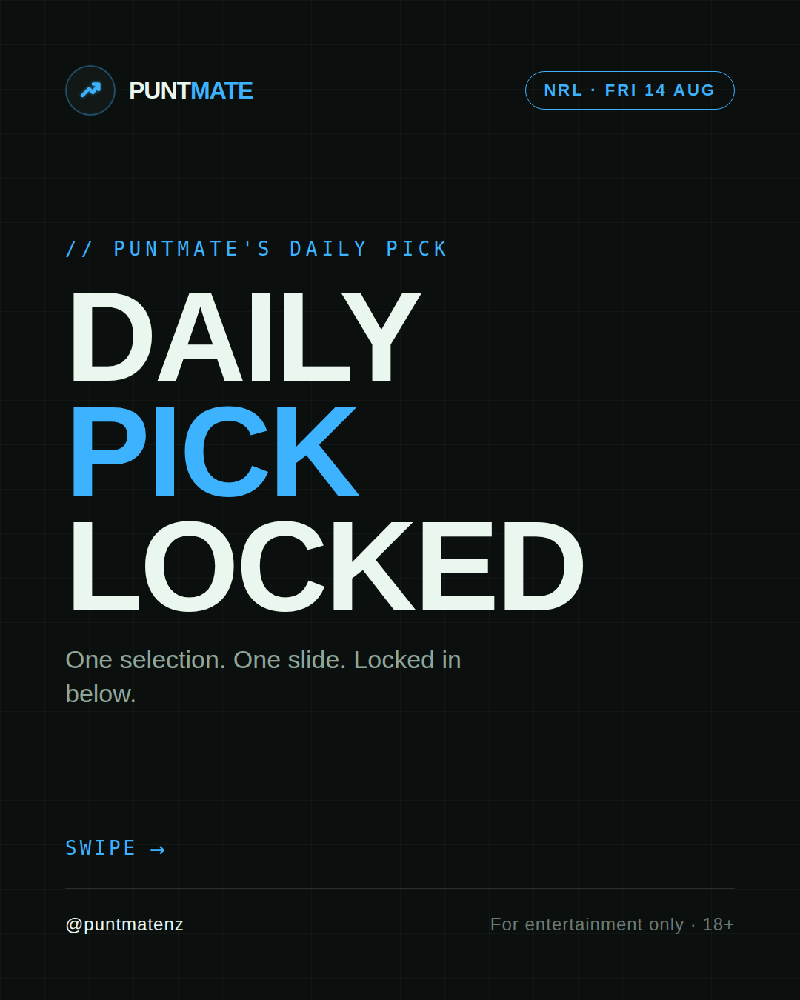
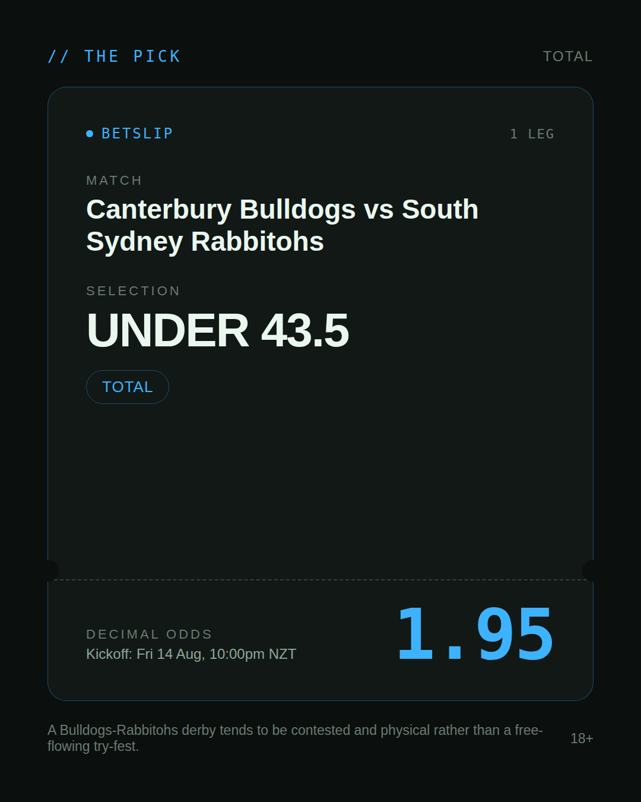
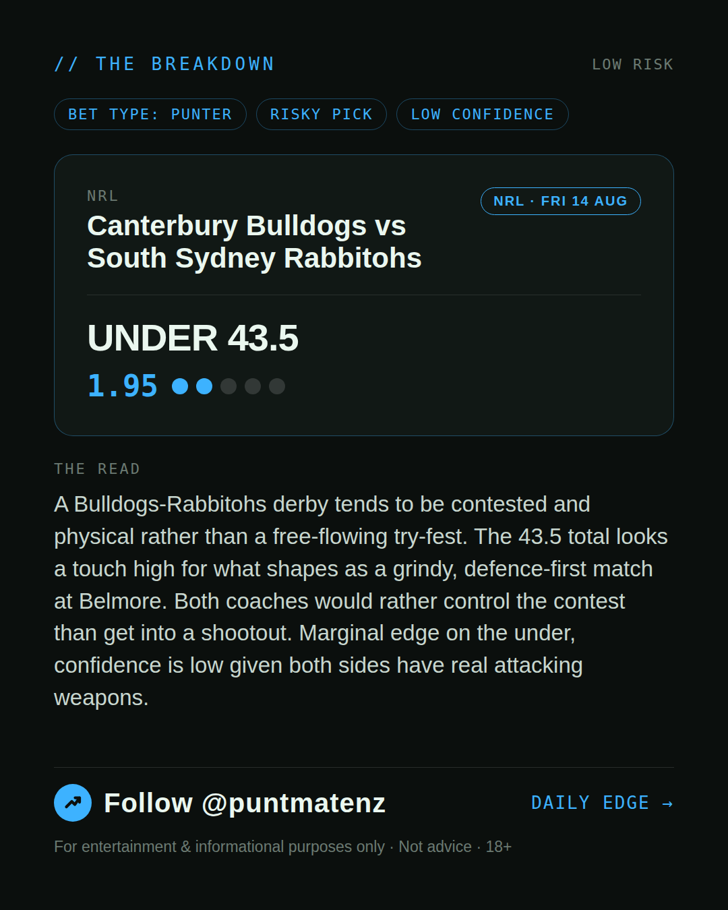
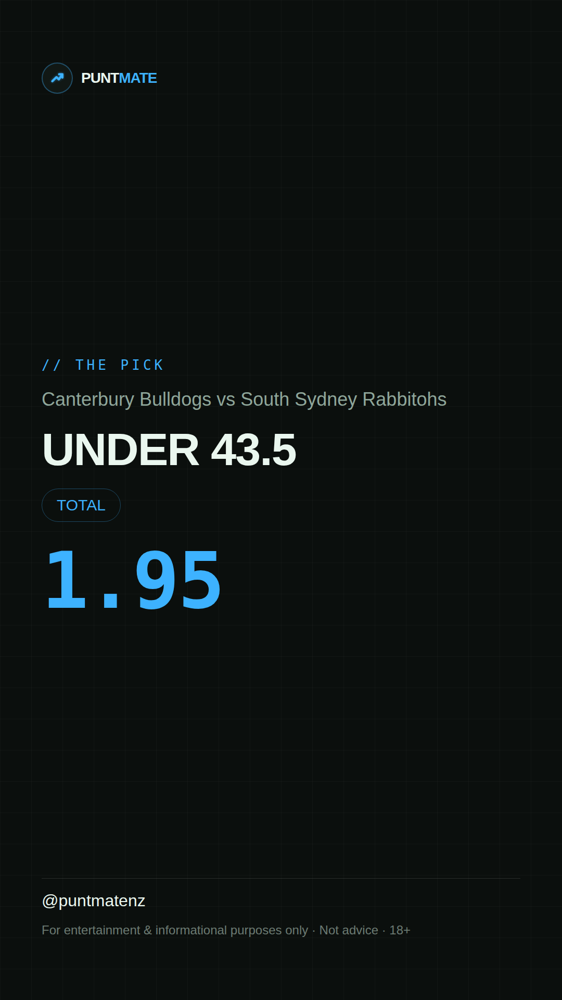

*🎯 PUNTMATE NZ — NRL* 🏟 Canterbury Bulldogs vs South Sydney Rabbitohs *PICK:* UNDER 43.5 *ODDS:* 1.95 (Total) *BET TYPE: PUNTER* _A Bulldogs-Rabbitohs derby tends to be contested and physical rather than a free-flowing try-fest. The 43.5 total looks a touch high for what shapes as a grindy, defence-first match at Belmore. Both coaches would rather control the contest than get into a shootout. Marginal edge on the under, confidence is low given both sides have real attacking weapons._ ────────────────── 📲 Join Telegram for daily picks ⚠️ For entertainment & informational purposes only. Not advice. 18+.
🎯 NRL — Canterbury Bulldogs vs South Sydney Rabbitohs UNDER 43.5 @ 1.95 (Total) BET TYPE: PUNTER Solid touch here. Not a lock, but the value's real and the form backs it up. A Bulldogs-Rabbitohs derby tends to be contested and physical rather than a free-flowing try-fest. The 43.5 total looks a touch high for what shapes as a grindy, defence-first match at Belmore. Both coaches would rather control the contest than get into a shootout. Marginal edge on the under, confidence is low given both sides have real attacking weapons. Follow for daily value picks → @puntmatenz ⚠️ For entertainment & informational purposes only. Not advice. 18+. #PuntmateNZ #SportsBetting #NZTAB #NRL
| has_pick | True |
| pick_id | 2026-08-13_Canterbury_Bulldogs_vs_South_Sydney_Rabbitohs |
| run_id | 31738148481 |
| generated_at | 2026-08-13T19:55:58.710286+00:00 |
| post_date | 2026-08-13 |
| match | Canterbury Bulldogs vs South Sydney Rabbitohs |
| sport | rugbyleague_nrl |
| sport_label | NRL |
| market | Total |
| selection | UNDER 43.5 |
| odds | 1.95 |
| bet_type | PUNTER_BET |
| bet_type_label | BET TYPE: PUNTER |
| bet_type_reason | Solid touch here. Not a lock, but the value's real and the form backs it up. A Bulldogs-Rabbitohs derby tends to be contested and physical rather than a free-flowing try-fest. The 43.5 total looks a touch high for what shapes as a grindy, defence-first match at Belmore. Both coaches would rather control the contest than get into a shootout. Marginal edge on the under, confidence is low given both sides have real attacking weapons. |
| classification | RISKY_PICK |
| risk | RISKY_PICK |
| confidence | LOW |
| confidence_label | LOW |
| final_explanation | A Bulldogs-Rabbitohs derby tends to be contested and physical rather than a free-flowing try-fest. The 43.5 total looks a touch high for what shapes as a grindy, defence-first match at Belmore. Both coaches would rather control the contest than get into a shootout. Marginal edge on the under, confidence is low given both sides have real attacking weapons. |
| public_caution | Keep this one light — the value's there but so is the uncertainty. |
| theme | night |
| carousel_paths | ['data/review/2026-08-13_Canterbury_Bulldogs_vs_South_Sydney_Rabbitohs/cover.png', 'data/review/2026-08-13_Canterbury_Bulldogs_vs_South_Sydney_Rabbitohs/tip.png', 'data/review/2026-08-13_Canterbury_Bulldogs_vs_South_Sydney_Rabbitohs/breakdown.png'] |
| carousel_urls | ['https://raw.githubusercontent.com/kingofthecastle24/puntmate/main/data/cards/2026-08-13_Canterbury_Bulldogs_vs_South_Sydney_Rabbitohs_night_1_cover.png', 'https://raw.githubusercontent.com/kingofthecastle24/puntmate/main/data/cards/2026-08-13_Canterbury_Bulldogs_vs_South_Sydney_Rabbitohs_night_2_tip.png', 'https://raw.githubusercontent.com/kingofthecastle24/puntmate/main/data/cards/2026-08-13_Canterbury_Bulldogs_vs_South_Sydney_Rabbitohs_night_3_breakdown.png'] |
| story_path | data/review/2026-08-13_Canterbury_Bulldogs_vs_South_Sydney_Rabbitohs/story.png |
| story_url | https://raw.githubusercontent.com/kingofthecastle24/puntmate/main/data/cards/2026-08-13_Canterbury_Bulldogs_vs_South_Sydney_Rabbitohs_night_story.png |
| intended_platforms | ['telegram', 'instagram_feed', 'instagram_story', 'facebook'] |
| workflow_state | GENERATED |
| has_punter_multi | False |
| has_gambler_multi | False |
| has_degenerate_multi | False |